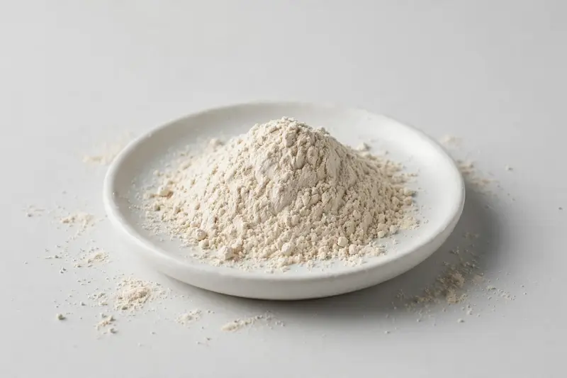

Sesame seed — Sesamum indicum extract for nutrition and cosmetic formulation work.

Overview
Sesame seed extract is derived from the seed of Sesamum indicum, valued for lignans such as sesamin and sesamolin. It appears in nutrition-positioned supplement concepts and in cosmetic and personal-care formulations, often on lignan-standardized grades. As a Xi'an-based trading company sourcing through partner producers, we confirm marker grade, format and documentation once your target specification is received.
Specifications below reflect commonly requested options in the market — not a stock list. Share your target spec and we'll confirm exactly what we can supply, honestly.
| Specification | Details |
|---|---|
| Botanical identity | Sesame seed (Sesamum indicum) extract powder |
| Source material | Seed |
| Marker compound | Commonly requested spec grades: sesamin and sesamolin standardized grades (e.g. 10% to 90% total lignans, depending on application); actual specs confirmed on inquiry. |
| Appearance | Off-white to light cream-beige fine powder |
| Analytical methods | Methods referenced in buyer specifications: HPLC |
| Mesh size | Typically 80–100 mesh (confirm per inquiry) |
| Testing | COA/TDS arranged on request; scope agreed per your spec |
Applications
Documentation
We don't claim in-house labs or certifications we don't hold. COA and TDS documents can be arranged on request, and testing scope is agreed against your specification before supply.
FAQ
Related products
Sodium hyaluronate (fermentation-derived)
Key marker: Cosmetic & food grades
View specs →Hydrolyzed collagen (bovine/marine)
Key marker: Type I & III, bovine/marine
View specs →Huperzine A (Huperzia serrata)
Key marker: 1% / 98%+ grades
View specs →Azadirachta indica
Key marker: Azadirachtin Content
View specs →Commiphora mukul
Key marker: Guggulsterone Content
View specs →Send your target spec and volumes — we'll respond with a tailored quotation.
Request a Quote